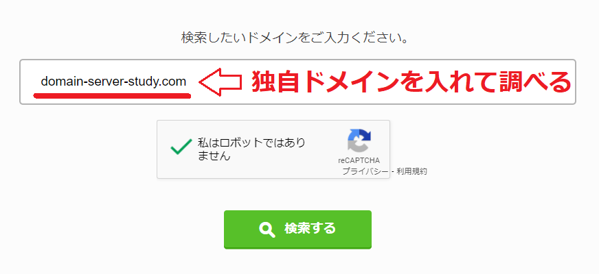
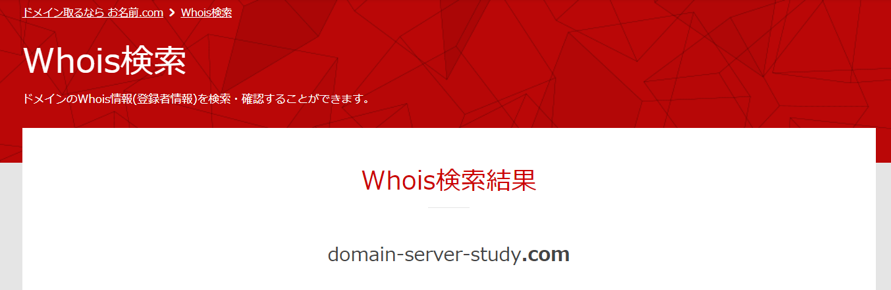
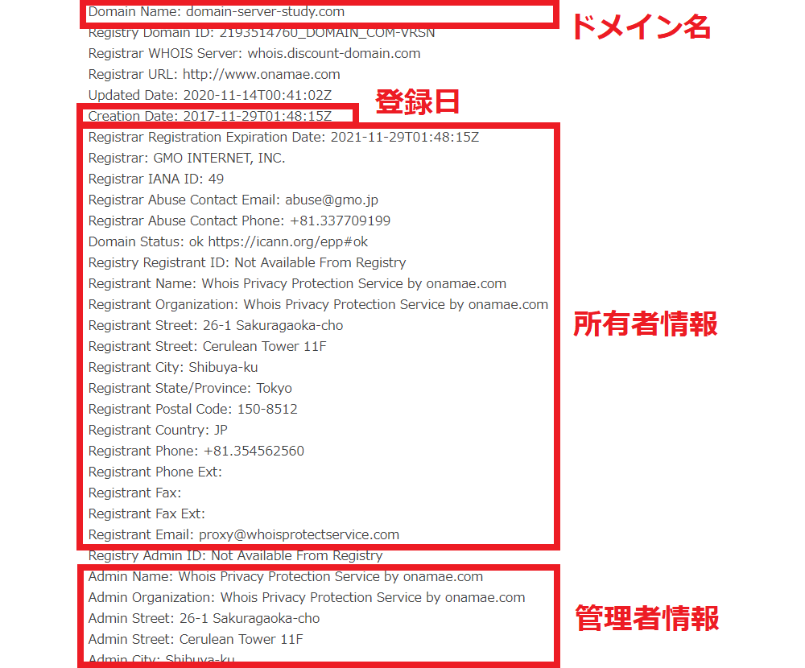

whois情報とは？個人情報を出さない設定方法、Whoisの調べ方を解説
Whois情報とは？
独自ドメインを持つと「登録情報」を開示されてしまう
独自ドメインを登録するとドメインの「登録年月日」や「有効期限」などが開示されることになります。
またメールアドレス、氏名、会社名、ドメイン名なども開示されます。これらの開示される情報のことを「whois情報」と呼びます。
内容が「登録年月日」や「有効期限」だけであれば気にする人はいないのかもしれませんが、
その他にも「名前、メールアドレス、電話番号」といった個人情報、会社情報に関することまで開示されてしまいます。
whois情報は誰でも調べることが出来る
このwhois情報は、実は誰でも簡単に調べられます。Whois情報が検索できるサイトで独自ドメイン名を入力して検索するだけで調べることが出来ます。
調べるには料金もかかりませんし、大きなドメイン会社であればWhois情報の検索用ページを作っているので、本当に誰でも調べられる状態になっています。
Whois情報で開示される情報
開示される情報は以下のとうりです。
- 登録ドメイン名
- レジストラ名
- 登録ドメイン名のプライマリおよびセカンダリネームサーバ
- ドメイン名の登録年月日
- ドメイン名の有効期限
- ドメイン名登録者の名前およびアドレス
- 技術的な連絡の担当者の名前、アドレス、電子メールアドレス、電話番号
- 登録に関する連絡の担当者の名前、アドレス、電子メールアドレス、電話番号
Whoisで提供される情報（※株式会社日本レジストリサービス）
Whois情報の開示は阻止できる！
Whois情報では個人情報が開示されてしまうことになるため、
多くのレンタルサーバーでは「whois情報変更サービス」と呼ばれるサービスがあって、
氏名、電話番号、メールアドレスなどのWhois情報をドメイン会社名義に変更してくれます。
つまりドメイン登録時（またはその後に）変更設定を行えば、自分の個人情報が開示されることはありません。
Whoisの変更設定は簡単にできる
Whois情報の変更はドメイン登録時に申込みをすることが出来ます。また登録後に行うことも出来ます。
変更依頼もとても簡単になっていて、基本的にはボタンをクリックするだけでドメイン会社のWhois情報に変更することが出来ます。
jpドメインなどではWhois情報が一部変更できないケースもある
どのドメインもWhois情報が変更できるのかと言ったらそうではありません。
「jp」ドメインについては一部の登録事業者では「氏名」だけについては変更できないようになっています。
Whois情報にかかる料金
このWhois情報変更についてはドメイン事業者によって無料の会社と有料の会社にわかれます。
それぞれ、どんな会社があるのか紹介していきましょう。
0円で変更できるドメイン事業者
基本的に多くのドメイン事業者ではwhois情報は無料で変更できます。
「ムームードメイン」「エックスドメイン」「スタードメイン」については0円でWhois情報を変更できます。
whois情報の変更についても、ドメイン登録時だけでなく登録後いつでも変更をかけれます。
有料になる事業者
Whois情報の変更が有料になるドメイン事業者としては「お名前ドメイン」「WIX」などがあります。
ただし、お名前ドメインはドメイン登録時にドメイン設定すれば0円でWhois変更ができます。
登録時に申請しない場合はWohis変更に年間980円ほど料金がかかります。
Whois情報の検索方法
ここからはWhois情報の調べ方について説明していきます。
Whois情報はドメイン会社などで作成している専用ページで調べることが出来ます。以下はお名前ドメインで提供しているWhois情報のページになります。
（１）専用ページで独自ドメインを正しく入れるだけで検索できる
調べる場合、検索欄に独自ドメインを入れます。この時、独自ドメイン以外の部分は一緒に入れないように注意しましょう。
「https://www.」の部分や最後のスラッシュ「/」は省いて検索します。
当サイトのURLで調べる場合であれば、黄色になっている部分だけをコピぺして、検索してください。
「https://www.domain-server-study.com/」

（２）検索結果を確認する方法
Whois情報の検索結果は英語で表示されます。どのような情報が載っているのか説明します。


基本的には上記の表のようにWhois情報が表示されます。
- Domain Name：（ドメイン名）
- Creation Date：（ドメイン登録日）
- Registrar ～：（所有者の情報各種）
- Admin ～：（管理担当の情報各種）
- Name Server：（ネームサーバー情報）
この記事の著者・プロフィール
Web制作を始めて約19年になります（HTML/css、Photoshop、Webマーケティング）。2005年から当サイトの運営を開始。
これまでに300個以上のドメインを取得、10社を超えるレンタルサーバーを利用してきました。